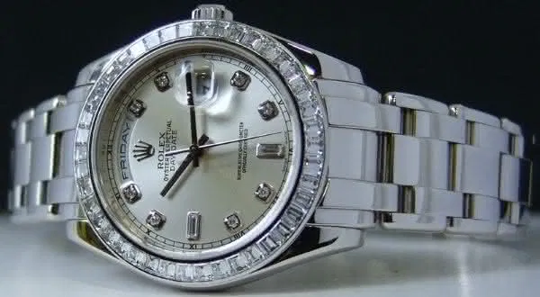
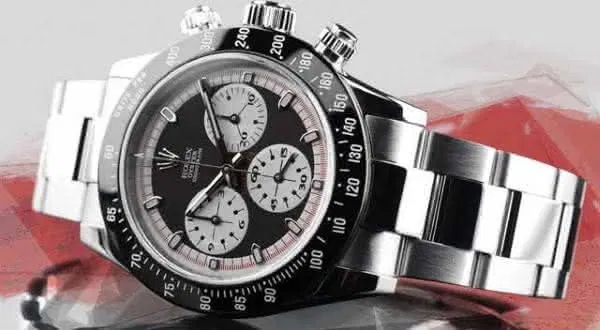
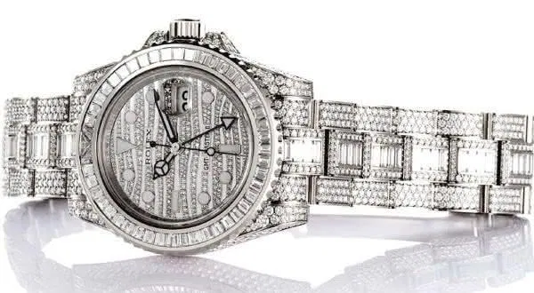
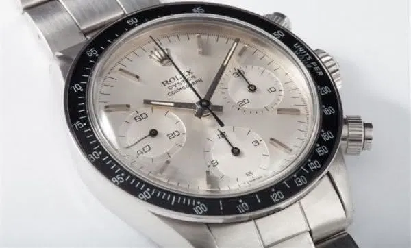
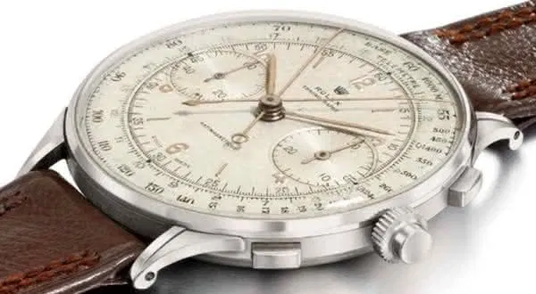

VLS RELÓGIOS IMPORTADOS
ROLEX

O que é um relógio Rolex?
Os relógios Rolex são produzidos a partir das melhores matérias‑primas e montados segundo métodos que levam meticulosamente em conta cada detalhe. Descubra a coleção de relógios Rolex no Site Oficial Rolex. A Rolex S.A. respeita o seu direito à privacidade e compromete-se em manter a sua confiança.
RELÓGIO ROLEX PLATINUM PEARL MASTER 18956
A empresa Rolex fabricou o Rolex Platinum Pearl Master em 2010. E prevaleceu no mercado após um ano em 2011. Feito de bisel de diamante baguete e mostrador foi cravejado com diamantes de meteorito. O conjunto rápido duplo de relógio é formado por cristal safira e fecho oculto. E elevava a graça do pulso da pessoa. Peça admirada por todos os fãs desta empresa no mundo.
VALOR: 20.350,00 R$
PAUL NEWMAN ROLEX DAYTONA
O indicador do relógio atrai os clientes e amantes desta marca. Seu mostrador é feito de ouro champagne 14 K e tem 3 pequenos mostradores no maior. Os mostradores internos são fixados com esmalte. O relógio também tem 17 jóias em movimento de alavanca perfeito de níquel.
VALOR: 300.000,00 R$
ROLEX GMT 116769TBR
O relógio apresentado diretamente pela empresa Rolex foi o Rolex GMT 116769 TBR. Um lindo relógio com muitas características como o mostrador luminoso de diamante que brilha no escuro. A correia feita de ouro branco 18 quilates com diamantes pequenos. O relógio de corda automática é resistivo à água até 100 metros abaixo por causa do fecho Oysterlock. A caixa do relógio decorada com 76 diamantes redondos brilhantes é destaque também.
VALOR: 281.300,00 R$
ERIC CLAPTON 1971 ROLEX DAYTONA
Eric Clapton é um rock star, guitarrista, cantor da Grã-Bretanha e esta peça pertenceu a ele. O valor do relógio foi aumentado quando Eric o usa em seu pulso. O relógio tem o mostrador monocromático, pulseira de prata com diferentes esquemas de designs padrão da empresa. É mais bonito e tem uma faixa de prata. O relógio tem um apelido de Albino.
VALOR: 539.300,00 R$
RELÓGIO ROLEX CHRONOGRAPH 1942
Rolex Chronograph de 1942 é o relógio mais caro da Rolex e apenas 12 modelos foram feitos. O relógio é um exemplo perfeito de trabalho duro do projetor e da fabricante. O mostrador é em prata fosco e tem o acabamento de níquel. Outras características únicas do relógio são o ouro Oink árabe, 17 pedras preciosas, numerais de bastão, telêmetro azul, escala de taquímetro preta, 2 mostradores secundários para segundos, constante, e uma divisão de minuto exterior.